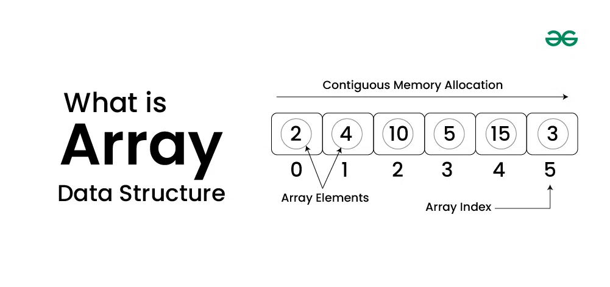

Introduction to C++
C++ is a general-purpose programming language that was developed by Bjarne Stroustrup as an enhancement of the C language to add object-oriented paradigm. It is a high-level programming language that was first released in 1985 and since then has become the foundation of many modern technologies like game engines, web browsers, operating systems, financial systems, etc.
Features of C++
- Simple: It is a simple language in the sense that programs can be broken down into logical units and parts, and has a rich library support and a variety of datatypes.
- Machine Independent: C++ code can be run on any machine as long as a suitable compiler is provided.
- Low-level Access: C++ provides low-level access to system resources, which makes it a suitable choice for system programming and writing efficient code.
- Fast Execution Speed: C++ is one of the fastest high-level languages. There is no additional processing overhead in C++, it is blazing fast.
- Object-Oriented: One of the strongest points of the language which sets it apart from C. Object-Oriented support helps C++ to make maintainable and extensible programs. i.e. large-scale applications can be built.
Basic Syntax
#include <iostream>
using namespace std;
int main() {
cout << "Hello, World!"<< endl;
return 0;
}
- Header File: The header files contain the definition of the functions and macros we are using in our program. In line #1, we used the #include
statement to tell the compiler to include an iostream header file library which stores the definition of the cin and cout standard input/output streams that we have used for input and output. #include is a preprocessor directive using which we import header files. - Namespace: A namespace in C++ is used to provide a scope or a region where we define identifiers. In line #2, we have used the using namespace std statement for specifying that we will be the standard namespace where all the standard library functions are defined.
- Main Function: In line #3, we defined the main function as int main(). The main function is the most important part of any C++ program. The program execution always starts from the main function. All the other functions are called from the main function. In C++, the main function is required to return some value indicating the execution status.
- Blocks: Blocks are the group of statements that are enclosed within { } braces. The body of the main function is from line #4 to line #9 enclosed within { }.
- Semicolons: As you may have noticed by now, each statement in the above code is followed by a ( ; ) semicolon symbol. It is used to terminate each line of the statement of the program.
- Identifiers: We use identifiers for the naming of variables, functions, and other user-defined data types. An identifier may consist of uppercase and lowercase alphabetical characters, underscore, and digits. The first letter must be an underscore or an alphabet.
- Keywords: In the C++ programming language, there are some reserved words that are used for some special meaning in the C++ program. It can't be used for identifiers. For example, the words int, return, and using are some keywords used in our program.
- Basic Output cout: In line #7, we have used the cout stream object (declared in the
header file) to print the sum of two numbers to the standard output stream (stdout). - Comments: You can see in the code there are two forward slashes (//) with some text, which are known as comments in a C++ program. Comments provide information about the code or a specific line of code to improve readability.
Applications of C++
- Game Engines: C++ powers game engines like Unreal Engine, offering real-time graphics rendering and physics simulation. Its performance enables seamless gaming experiences across platforms. Major companies like Epic Games rely on it for blockbuster titles.
Features:
- Real-time rendering for immersive 3D graphics.
- Powerful tools for physics simulations and effects.
- Cross-platform compatibility for a wider reach.
- Operating Systems: C++ is integral to operating systems like Windows, macOS, and Linux. Its ability to manage hardware resources efficiently makes it essential for system-level programming. Microsoft and Apple use C++ to maintain their flagship OS products.
Features:
- Manages hardware resources efficiently.
- Provides fast and stable system-level performance.
- Enables multitasking and robust memory management.
- Embedded Systems: C++ is widely used in Embedded Systems - microcontrollers and embedded devices like automotive systems and IoT gadgets. Its lightweight design and speed suit resource-constrained environments. Companies like Bosch and Siemens lead this domain.
Features:
- Lightweight and optimized for resource-constrained environments.
- Enables real-time control for IoT and automotive systems.
- Secure and reliable code for critical applications.
- Scientific Applications: Simulations and computation-heavy tools like MATLAB and CERN’s software depend on C++ for precision. Its reliability ensures accurate results in research and experiments. NASA also leverages C++ for space exploration projects.
Features:
- High precision for simulations and complex calculations.
- Handles computational challenges in physics, chemistry, and biology.
- Portable across platforms for widespread use.
- Web Browsers: Modern browsers like Google Chrome and Firefox use C++ for their rendering engines. It ensures fast webpage loading and smooth performance. Google's Chromium project heavily utilizes C++ for browser innovations.
Features:
- Fast webpage loading and smooth performance due to C++'s low-level control.
- Optimized memory management and high efficiency for handling dynamic content.
- Cross-platform compatibility ensures consistent user experiences.
Online C++ Complier
Introduction to Arrays
What is an Array
Array is a linear data structure where all elements are arranged sequentially. It is a collection of elements of same data type stored at contiguous memory locations.
Basic terminologies of Array
- Array Index: In an array, elements are identified by their indexes. Array index starts from 0.
- Array element: Elements are items stored in an array and can be accessed by their index.
- Array Length: The length of an array is determined by the number of elements it can contain.
Types of Arrays
- One-dimensional array (1-D arrays): You can imagine a 1d array as a row, where elements are stored one after another.
- Two-dimensional (2D) array: Multidimensional arrays can be considered as an array of arrays or as a matrix consisting of rows and columns.
- Three-dimensional array: A 3-D Multidimensional array contains three dimensions, so it can be considered an array of two-dimensional arrays.
Tutorial for Arrays
Introduction to Trees
What is an Trees
Tree data structure is a hierarchical structure that is used to represent and organize data in the form of parent child relationship. The following are some real world situations which are naturally a tree.
- Folder structure in an operating system.
- Tag structure in an HTML (root tag the as html tag) or XML document.

Basic terminologies of Trees
- Parent Node: The node which is an immediate predecessor of a node is called the parent node of that node. {B} is the parent node of {D, E}.
- Child Node: The node which is the immediate successor of a node is called the child node of that node. Examples: {D, E} are the child nodes of {B}.
- Root Node: The topmost node of a tree or the node which does not have any parent node is called the root node. {A} is the root node of the tree. A non-empty tree must contain exactly one root node and exactly one path from the root to all other nodes of the tree.
- Leaf Node or External Node: The nodes which do not have any child nodes are called leaf nodes. {I, J, K, F, G, H} are the leaf nodes of the tree.
- Ancestor of a Node: Any predecessor nodes on the path of the root to that node are called Ancestors of that node. {A,B} are the ancestor nodes of the node {E}
- Descendant: A node x is a descendant of another node y if and only if y is an ancestor of x.
- Sibling: Children of the same parent node are called siblings. {D,E} are called siblings.
- Level of a node: The count of edges on the path from the root node to that node. The root node has level 0.
- Internal node: A node with at least one child is called Internal Node.
- Neighbour of a Node: Parent or child nodes of that node are called neighbors of that node.
- Subtree: Any node of the tree along with its descendant.
Types of Trees
- Binary Tree: A binary tree is a tree data structure where each node has at most two children. These two children are usually referred to as the left child and right child. It is widely used in applications such as binary search trees and heaps.
- Ternary Tree: A Ternary Tree is a tree data structure in which each node has at most three child nodes, usually distinguished as “left”, “mid” and “right”.
- N-ary Tree (Generic Tree): Generic trees are a collection of nodes where each node is a data structure that consists of records and a list of references to its children(duplicate references are not allowed). Unlike the linked list, each node stores the address of multiple nodes.
- Many children at every node.
- The number of nodes for each node is not known in advance.
Every node stores the addresses of its children and the very first node’s address will be stored in a separate pointer called root.
Tutorial for Trees
Introduction to Graph
What is Graph
Graph is a non-linear data structure like tree data structure. The limitation of tree is, it can only represent hierarchical data. For situations where nodes or vertices are randomly connected with each other other, we use Graph. Example situations where we use graph data structure are, a social network, a computer network, a network of locations used in GPS and many more examples where different nodes or vertices are connected without any hierarchic or constraint on structure.

Basic terminologies of Graph
- Graph: A Graph G is a non-empty set of vertices (or nodes) V and a set of edges E, where each edge connects a pair of vertices. Formally, a graph can be represented as G= (V, E). Graphs can be classified based on various properties, such as directedness of edges and connectivity.
- Vertex (Node): A Vertex, often referred to as a Node, is a fundamental unit of a graph. It represents an entity within the graph. In applications like social networks, vertices can represent individuals, while in road networks, they can represent intersections or locations.
- Edge: An Edge is a connection between two vertices in a graph. It can be either directed or undirected. In a directed graph, edges have a specific direction, indicating a one-way connection between vertices. In contrast, undirected graphs have edges that do not have a direction and represent bidirectional connections.
- Degree of a Vertex: The Degree of a Vertex in a graph is the number of edges incident to that vertex. In a directed graph, the degree is further categorized into the in-degree (number of incoming edges) and out-degree (number of outgoing edges) of the vertex.
- Path: A Path in a graph is a sequence of vertices where each adjacent pair is connected by an edge. Paths can be of varying lengths and may or may not visit the same vertex more than once. The shortest path between two vertices is of particular interest in algorithms such as Dijkstra's algorithm for finding the shortest path in weighted graphs.
- Cycle: A Cycle in a graph is a path that starts and ends at the same vertex, with no repetitions of vertices (except the starting and ending vertex, which are the same). Cycles are essential in understanding the connectivity and structure of a graph and play a significant role in cycle detection algorithms.
Types of Graph
- Finite Graphs: A graph is said to be finite if it has a finite number of vertices and a finite number of edges. A finite graph is a graph with a finite number of vertices and edges. In other words, both the number of vertices and the number of edges in a finite graph are limited and can be counted. Finite graphs are used to represent real-world situations where there are a limited number of objects and their connections. They help in organizing, analyzing, and optimizing relationships in different applications.
- Infinite Graph: A graph is called an infinite graph if it has an infinite number of vertices and an infinite number of edges. Unlike finite graphs, which have a fixed number of nodes and connections, infinite graphs extend indefinitely.
- Trivial Graph: A graph is said to be trivial if a finite graph contains only one vertex and no edge. A trivial graph is a graph with only one vertex and no edges. It is also known as a singleton graph or a single vertex graph. A trivial graph is the simplest type of graph and is often used as a starting point for building more complex graphs. In graph theory, trivial graphs are considered to be a degenerate case and are not typically studied in detail
- Simple Graph: A simple graph is a graph that does not contain more than one edge between the pair of vertices. A simple railway track connecting different cities is an example of a simple graph.
- Multi Graph: Any graph which contains some parallel edges but doesn't contain any self-loop is called a multigraph. For example a Road Map.
- Parallel Edges: If two vertices are connected with more than one edge then such edges are called parallel edges that are many routes but one destination.
- Loop: An edge of a graph that starts from a vertex and ends at the same vertex is called a loop or a self-loop.